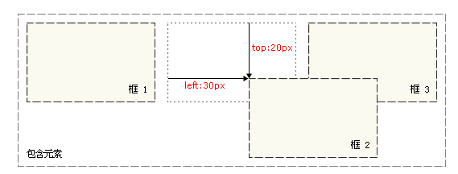
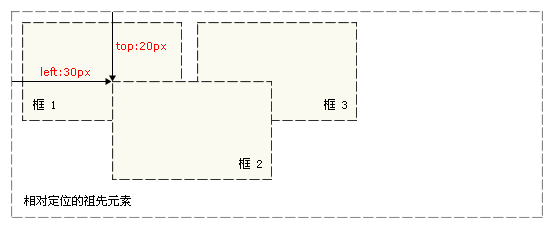
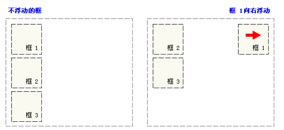
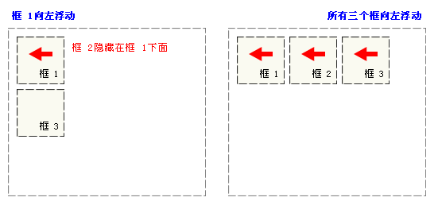
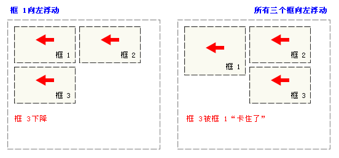
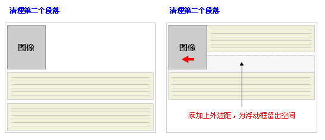

Free Web Building Tutorials
At W3School.com.cn you will find all the Web-building tutorials you need, from basic HTML and XHTML to advanced XML, XSL, Multimedia and WAP.
W3School.com.cn - The Largest Web Developers Site On The Net!
相对定位会按照元素的原始位置对该元素进行移动。
样式 "left：-20px" 从元素的原始左侧位置减去 20 像素。
样式 "left：20px" 向元素的原始左侧位置增加 20 像素。
通过绝对定位，元素可以放置到页面的任何位置。下面的标题距离页面左侧 100px，距离页面顶部 150px。
一些文本。
更多文本。

一些文本。一些文本。一些文本。一些文本。一些文本。一些文本。
如果元素中的内容超出了给定的宽度和高度属性，overflow 属性可以确定是否显示滚动条等行为。
如果元素中的内容超出了给定的宽度和高度属性，overflow属性可以确定是否显示滚动条等行为。
如果元素中的内容超出了给定的高度和宽度属性，overflow 属性可以确定是否显示滚动条等行为。
clip 属性剪切了一幅图像：

这是一幅 位于段落中的图像。
位于段落中的图像。
这是一幅位于段落中的图像。

默认的 z-index是 0 。Z-index-1拥有更低的优先级。
默认的z-index是0。 Z-index 1 拥有更高的优先级。
相对定位
绝对定位
请看下图，当把框 1 向右浮动时，它脱离文档流并且向右移动，直到它的右边缘碰到包含框的右边缘：
再请看下图，当框 1 向左浮动时，它脱离文档流并且向左移动，直到它的左边缘碰到包含框的左边缘。因为它不再处于文档流中，所以它不占据空间， 实际上覆盖住了框 2，使框 2 从视图中消失。 如果把所有三个框都向左移动，那么框 1 向左浮动直到碰到包含框，另外两个框向左浮动直到碰到前一个浮动框。
如下图所示，如果包含框太窄，无法容纳水平排列的三个浮动元素，那么其它浮动块向下移动，直到有足够的空间。如果浮动元素的高度不同，那么当 它们向下移动时可能被其它浮动元素“卡住”：
要想阻止行框围绕浮动框，需要对该框应用 clear 属性。clear 属性的值可以是 left、right、both 或 none，它表示框的哪些边不应该挨着浮动框。 为了实现这种效果，在被清理的元素的上外边距上添加足够的空间，使元素的顶边缘垂直下降到浮动框下面：
在下面的段落中，我们添加了一个样式为 float:right 的图像。结果是这个图像会浮动到段落的右侧。
This is some text. This is some text. This is some text.
This is some text. This is some text. This is some text.
This is some text. This is some text. This is some text.
This is some text. This is some text. This is some text.
This is some text. This is some text. This is some text.
This is some text. This is some text. This is some text.
This is some text. This is some text. This is some text.
This is some text. This is some text. This is some text.
This is some text. This is some text. This is some text.
This is some text. This is some text. This is some text.
在下面的段落中，图像会浮动到右侧，并且添加了点状的边框。我们还为图像添加了边距，这样就可以把文本推离图像：上和右外边距是 0px，下外边距 是 15px，而图像左侧的外边距是 20px。
This is some text. This is some text. This is some text.
This is some text. This is some text. This is some text.
This is some text. This is some text. This is some text.
This is some text. This is some text. This is some text.
This is some text. This is some text. This is some text.
This is some text. This is some text. This is some text.
This is some text. This is some text. This is some text.
This is some text. This is some text. This is some text.
This is some text. This is some text. This is some text.
This is some text. This is some text. This is some text.
This is some text. This is some text. This is some text. This is some text. This is some text. This is some text. This is some text. This is some text. This is some text. This is some text. This is some text. This is some text. This is some text. This is some text. This is some text. This is some text. This is some text. This is some text. This is some text. This is some text. This is some text. This is some text. This is some text. This is some text. This is some text. This is some text. This is some text. This is some text. This is some text. This is some text. This is some text. This is some text. This is some text. This is some text. This is some text. This is some text. This is some text. This is some text. This is some text.
在上面的段落中，div 元素的宽度是 120 像素，它其中包含图像。div 元素浮动到右侧。我们向 div 元素添加了外边距，这样就可以把 div 推离 文本。同时，我们还向 div 添加了边框和内边距。
This is some text. This is some text. This is some text. This is some text. This is some text. This is some text. This is some text. This is some text. This is some text. This is some text. This is some text. This is some text. This is some text. This is some text. This is some text. This is some text. This is some text. This is some text. This is some text. This is some text. This is some text.
在上面的段落中，文本的第一个字母包含在一个 span 元素中。这个 span 元素的宽度是当前字体尺寸的 0.7 倍。span 元素的字体尺寸是 400%，行高是 80%。span 中的字母字体是 "Algerian"
在上面的例子中，我们把 ul 元素和 a 元素浮向左浮动。li 元素显示为行内元素（元素前后没有换行）。这样就可以使列表排列成一行。ul 元素的宽度是 100%，列表中的每个超链接的宽度是 7em（当前字体尺寸的 7 倍）。我们添加了颜色和边框，以使其更漂亮。
"Never increase, beyond what is necessary, the number of entities required to explain anything." William of Ockham (1285-1349)
At W3School.com.cn you will find all the Web-building tutorials you need, from basic HTML and XHTML to advanced XML, XSL, Multimedia and WAP.
W3School.com.cn - The Largest Web Developers Site On The Net!